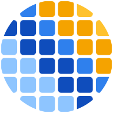
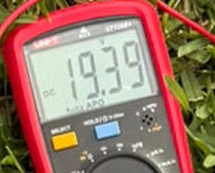
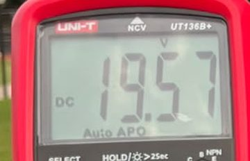

Misión
Transformar la consulta de un cliente en una propuesta solar confiable, comprensible y lista para tomar una decisión informada.

SolvectraIngeniería fotovoltaica en México, con números claros.
Convertimos el consumo real de tu escuela, hogar o negocio en una propuesta técnica y económica clara: qué se instalaría, cuánto costaría, cuánto podrías ahorrar y por qué confiar en los números.
Solvectra es una consultoría de ingeniería fotovoltaica. Nacimos en el aula de Análisis de Circuitos Eléctricos con una idea sencilla: una propuesta solar debe poder explicarse con voltaje, corriente, potencia y energía, no con frases de venta.
Por eso diseñamos cada sistema a partir de lo que el cliente realmente consume, elegimos componentes que se pueden comprar hoy y verificamos que sean compatibles entre sí. El resultado es una cotización que un director de escuela, una familia o el dueño de un negocio puede leer, entender y comparar.
«Amanecer en celdas». Nuestro símbolo son las celdas de un panel que se encienden del azul al amarillo: la luz que se vuelve electricidad, paso a paso.
Transformar la consulta de un cliente en una propuesta solar confiable, comprensible y lista para tomar una decisión informada.
Que cada escuela, hogar y negocio que piense en energía solar pueda hacerlo con datos verificables, en línea con el ODS 7 de energía asequible y no contaminante.
Rigor en cada cálculo, transparencia en cada precio y claridad para quien no es especialista.
Cada proyecto pasa por las mismas siete etapas de ingeniería. Baja para recorrerlas y toca «Ver más» en la que quieras conocer a fondo.
Cuánta energía usas y cuándo.
Hacemos el inventario de tus equipos: cuántos son, cuánta potencia tiene cada uno y cuántas horas al día se usan. Con eso separamos dos cifras que se confunden mucho: la demanda (kW) y la energía (kWh).
Cálculo P = Σ n·Pequipo · E = Σ n·Pequipo·h
Cuántos paneles y cómo conectarlos.
Con tu energía diaria y las horas solares pico de tu ubicación calculamos la potencia del arreglo. Luego decidimos cuántos paneles van en serie (se suman los voltajes) y cuántas filas en paralelo (se suman las corrientes).
Cálculo PFV = Edía ÷ (HSP × PR)
Convierte la energía del sol para tus contactos.
Los paneles entregan corriente directa (CD); tus equipos usan corriente alterna (CA). Elegimos un inversor real y comprobamos con su ficha técnica que la potencia, las tensiones y las corrientes del arreglo quepan en sus límites.
Cálculo Ns·Voc < Vmáx · Np·Isc < Imáx
Energía guardada para cuando no hay sol.
Si quieres respaldo, estimamos la capacidad del banco de baterías, cómo conectarlas y cuántas horas te darían. Te decimos qué supusimos y hasta dónde llega el cálculo.
Cálculo C = E × días de autonomía ÷ (DoD × η)
Solo equipos que puedes comprar hoy.
Cada panel, inversor y batería de la propuesta existe en el mercado. Si no encontramos un dato verificable, lo marcamos como «Dato no disponible» en lugar de inventarlo.
Inversión, ahorro y retorno.
Sumamos el costo de los componentes, estimamos cuánto dejarías de pagar con la tarifa que tú nos das y calculamos en cuánto tiempo recuperarías la inversión. Si cambias la tarifa, cambia el retorno.
Cálculo Retorno simple = inversión ÷ ahorro anual
Todo en un documento para decidir.
Una propuesta clara para alguien que no es especialista: qué se instalaría, cuánto costaría, cuánto podrías ahorrar y por qué confiar en los resultados. Sin exagerar beneficios.
Seis pasos que siguen el mismo orden que usa un ingeniero: primero entender, luego calcular y al final comunicar.
Este estimador rápido te da una primera idea del tamaño de tu sistema con los datos de tu recibo. Es una aproximación preliminar: el cotizador completo, con inversor, baterías, precios y reporte PDF, está en desarrollo.
Resultado preliminar. No incluye inversor, baterías, sombras, orientación, espacio disponible ni precios: eso lo resuelve el cotizador completo.
Seguirá los siete pasos del servicio y generará tu reporte PDF.
Una propuesta convincente no exagera beneficios. Por eso cada cifra lleva un sello que indica su origen, y lo que no sabemos lo decimos.


Probamos al sol un panel Epcom PRO‑10012 de 100 W (potencia según su etiqueta). En circuito abierto, el multímetro marcó 19.39 V con el panel acostado y 19.57 V con el panel inclinado hacia el sol. El voltaje cambia poco con la luz; la corriente, mucho. Lo tomamos en cuenta al conectar paneles en serie y en paralelo.
Antes de ofrecer el servicio, probamos el método completo con un aula escolar: el caso ideal, porque consume energía de día, cuando hay sol.
Levantaremos el inventario del aula, mediremos o leeremos la potencia de cada equipo, dimensionaremos el sistema con componentes reales y publicaremos el reporte completo como ejemplo.
| Equipo | Cantidad | Potencia | Horas/día |
|---|---|---|---|
| Iluminación | Pendiente | Pendiente | Pendiente |
| Proyector | Pendiente | Pendiente | Pendiente |
| Aire acondicionado | Pendiente | Pendiente | Pendiente |
| Computadoras y contactos | Pendiente | Pendiente | Pendiente |
Las cifras aparecerán cuando terminemos el levantamiento. Hasta entonces no publicamos estimaciones.
El kW es potencia: qué tan rápido usa energía un equipo en un instante. El kWh es energía: cuánta usa a lo largo del tiempo (potencia × horas). La potencia decide el tamaño del inversor; la energía decide cuántos paneles necesitas y cuánto ahorras, porque en tu recibo pagas sobre todo por los kWh.
Para empezar, tu recibo de luz: los kWh del periodo y lo que pagaste. Para una propuesta formal, la lista de equipos con su potencia y horas de uso, y la ubicación del inmueble para conocer cuánto sol recibe.
En serie se suman los voltajes y la corriente se mantiene; en paralelo se suman las corrientes y el voltaje se mantiene. El arreglo debe quedar dentro de los límites de voltaje y corriente del inversor; si no, el equipo no arranca o se daña. Por eso lo verificamos con la ficha técnica.
Depende de si quieres respaldo cuando no hay sol o cuando falla la red. Las baterías aumentan la inversión, así que te mostramos la capacidad, la autonomía y su efecto en el retorno para que decidas con números.
Te damos una estimación basada en la tarifa que tú nos indicas en MXN/kWh y en supuestos que te mostramos. No prometemos un ahorro garantizado: el clima, el uso y las tarifas pueden cambiar.
No. Es un dimensionamiento y una cotización preliminar para tomar una decisión informada. Un proyecto ejecutivo para construir requiere visita técnica, revisión estructural y trámites de interconexión.
Toma tu recibo de luz y haz una primera estimación en un minuto.
Calcula tu sistema solar